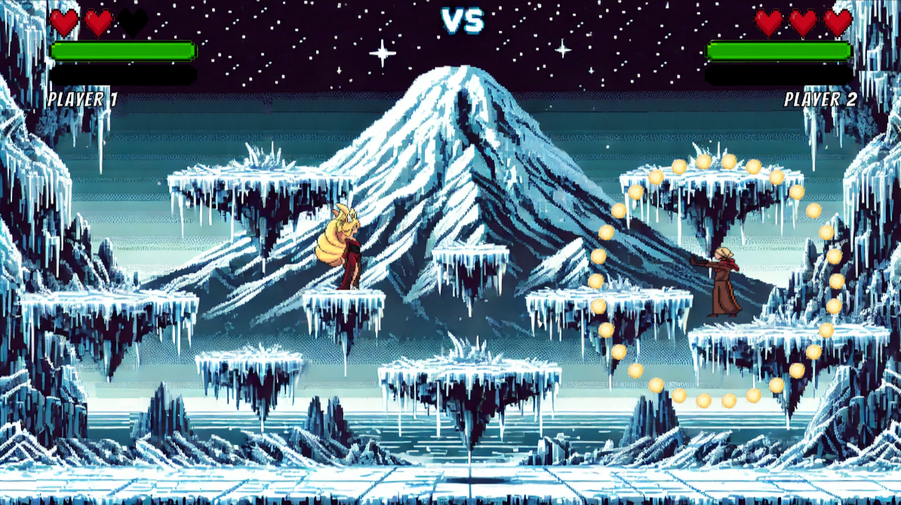

Software Engineering Student at Escuela Politécnica Nacional
Personal Profile
Seventh-semester student specializing in web application development
and database management. Academic experience in Java, Python, HTML,
CSS, and SQL applied to building structured and functional applications.
About Me
I am a Software Engineering student at Escuela Politécnica Nacional.
My academic interests include frontend development, backend development,
databases, and the creation of accessible web interfaces.
Experience
General Logistics Assistant
Ludolab | October 2024 - January 2025
Reviewed portfolios, planning progress, and evaluations from tutors and beneficiaries.
Prepared detailed reports and certificates for tutors and project participants.
Verified and adjusted reports, certificates, and final documentation for the digital inclusion
program.
Floral Decorating Assistant
MaribelFloral | July 2022 - January 2024
Coordinated and assembled floral arrangements.
Managed orders and suppliers.
Prepared and managed customer quotations using Microsoft Office.
Description: Desktop application designed for managing
the restaurant or cafeteria at Escuela Politécnica Nacional. It facilitates
order registration and efficient inventory control of products.
Interactive Entertainment Application – Knockout Game, 2024

Description: 2D fighting game for two players, allowing
one versus one battles in various arenas. Available as a desktop application
or web version, hosted on the Itch.io platform.
Description: Desktop application developed for the
administrative and operational management of a cinema. It includes modules
for employee management, theaters, showtimes, ticket sales, electronic
invoicing, and sales report generation.
Description: Desktop application for a gym network with
two branches in Quito, North and South. It implements a distributed database
to manage clients, instructors, subscriptions, and dietary supplements.
This video presents an overview of my skills and experiences as a software
engineering student. It includes Spanish subtitles and a written transcription.
Video Transcription
Hola con todos, bienvenidos a mi vídeo de presentación. Mi nombre es Mateo Simbaña
y soy estudiante de Ingeniería de Software en la Escuela Politécnica Nacional.
Durante mi formación he trabajado en proyectos donde la tecnología ayuda a resolver
problemas concretos, como registrar pedidos, organizar inventarios, gestionar información
de clientes o presentar datos de forma más clara. Esto me ha permitido entender que una buena
solución no solo debe funcionar, sino también ahorrar tiempo, reducir errores y ser fácil
de usar para las personas.
Entre mis principales habilidades están la resolución de problemas, el trabajo en equipo,
la adaptación y la comunicación. Considero que estas habilidades son importantes porque
permiten entender mejor las necesidades de los usuarios y aportar en la construcción de
soluciones útiles.
Muchas gracias.
Contact
The following table presents my main contact channels. Each cell can be
focused using the keyboard to improve navigation and readability.